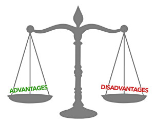

IELTS Writing: advantages & disadvantages essay
In this lesson you will learn how to produce a band 9 answer for advantages & disadvantages essay in IELTS Writing. As an example, we will use a topic of tourism in modern world. Basically, in all advantages and disadvantages essays your task is to describe positive and negative sides of a given topic + give your opinion.
In this lesson you will:
- see a question sample
- learn effective ways to quickly produce ideas for your answer
- learn band 9 answer structure
for advantages and disadvantages essay in IELTS.
IELTS advantages & disadvantages question sample
For example, you can get this question for IELTS writing task 2:
A lot of places in the world rely on tourism as a main source of income. Unfortunately, tourism can also be a source of problems if it is not managed correctly.
Describe the advantages and disadvantages of tourism in the modern world. Do you think that benefits of tourism outweight its drawbacks?
This essay topic is related to tourism. Of course, topics for questions will vary, but ideal answer structure is the same for all advantages & disadvantages essays in IELTS.
Producing ideas for your answer
Before you start writing your essay, you should always spend 1-2 minutes on producing ideas for your answer. This way, you’ll know what to write about and your answer will be more coherent and well-structured. In case of advantages & disadvantages essay, you need to think of 2-3 advantages and 2-3 disadvantages of the given issue.
Let’s think about advantages and disadvantages of tourism in the modern world.
Advantages of tourism:
- boost in country’s economy due to increased spending
- new job opening for local people
- opportunities to discover new places for individual travelers
Disadvantages of tourism:
- destruction of popular tourist destinations by large numbers of tourists
- development of illegal economic activities
- local people can experience loss of privacy
Now, after we’ve collected some ideas, it’s time to use them in our essay.
Band 9 answer structure for causes & solutions essay
Though there are many ways to structure your IELTS essay, we’ll use this time-tested band 9 essay structure:
- Introduction
- Body paragraph 1 – advantages
- Body paragraph 2 – disadvantages
- Conclusion
Tip: before starting to write your essay, decide what you think: does tourism have more advantages or disadvantages? You’ll need to make accent on your opinion in one of the body paragraphs.
We’ll use the opinion that tourism has more advantages.
Introduction Write the introduction in 2 sentences:
- Sentence 1 - paraphrase the question (restate the problem):
- Sentence 2 - tell the examiner what you’re going to describe in your essay:
Nowadays tourism generates a significant portion of national income for many countries, but it has certain drawbacks too.
This essay will examine the advantages and disadvantages of tourism and provide a logical conclusion.
Body paragraph 1 - advantages
- Sentence 1 - state 2 main advantages:
- Sentences 2-4 - explain the first advantage + give an example (if possible):
- Sentences 5-7 - explain the second advantage + give an example (if possible):
The two main advantages of developed tourism industry are boost in country’s economy and a large number of new job openings for the local people.
Firstly, tourists spend money on a wide range of services, including hotels, amusements, transportation, food and medical services. This way, tourism yields an additional income, greatly supporting the countries’ economies.
Secondly, tourism increases the level of employment by bringing new jobs. For instance, the influx of tourists results in a larger demand in restaurant workers, tour guides, hotel staff and employees of retail services, exhorting business owners to hire more people for these positions.
Body paragraph 2 - disadvantages
- Sentence 1 - state 2 main disadvantages:
- Sentences 2-4 - explain the first disadvantage + give an example (if possible):
- Sentences 5-7 - explain the second disadvantage + give an example (if possible):
- Sentences 8 - make an accent on your opinion (we’ll use the opinion that tourism has more advantages):
However, tourism also has some major disadvantages like destruction of popular tourist destinations and development of illegal economic activities.
Ancient buildings, temples and monuments struggle to cope with a vast amount of visitor’s traffic and get damaged. Also, the large number of tourists can cause environmental problems. For instance, when places of interest are overcrowded, natural resources often become overexploited.
What’s more, tourism can create more serious situations where criminal issues are involved. The presence of a considerable number of tourists with a lot of money to spend, and often carrying valuables such as cameras and jewelry, increases the attraction for criminals and brings with it activities like robbery and drug dealing.
However, proper hospitality management and correct usage of tourism revenue by the local government can eliminate these disadvantages.
Conclusion
- Sentences 1-2 - briefly restate the advantages and disadvantages
- Sentence 2 - give your final opinion
To conclude, although tourism has certain disadvantages like destructive effects and growth of crime rate, it has an extremely positive impact on country’s economy and provides a large number of new jobs for the local people.
I believe that these benefits of tourism outweigh its drawbacks.
Band 9 answer sample
Nowadays tourism generates a significant portion of national income for many countries, but it has certain drawbacks too. This essay will examine the advantages and disadvantages of tourism and provide a logical conclusion.
The two main advantages of developed tourism industry are boost in country’s economy and a large number of new job openings for the local people. Firstly, tourists spend money on a wide range of services, including hotels, amusements, transportation, food and medical services. This way, tourism yields an additional income, greatly supporting the country’s economy. Secondly, tourism increases the level of employment by bringing new jobs. For instance, the influx of tourists results in a larger demand in restaurant workers, tour guides, hotel staff and employees of retail services, exhorting business owners to hire more people for these positions.
But tourism also has some major disadvantages like destruction of popular tourist destinations and development of illegal economic activities. іAncient buildings, temples and monuments struggle to cope with a vast amount of visitor’s traffic and get damaged. Also, the large number of tourists can cause environmental problems. For instance, when places of interest are overcrowded, natural resources often become overexploited. What’s more, the presence of a considerable number of tourists with a lot of money to spend, and often carrying valuables such as cameras and jewelry, increases the attraction for criminals and brings with it activities like robbery and drug dealing. However, proper hospitality management and correct usage of tourism revenue by the local government can eliminate these disadvantages.
To conclude, although tourism can have certain negative effects like destructive impact and growth of crime rate, it has an extremely positive influence on country’s economy and provides a large number of new jobs for the local people. I believe that these benefits of tourism outweigh its drawbacks.
(299 words)